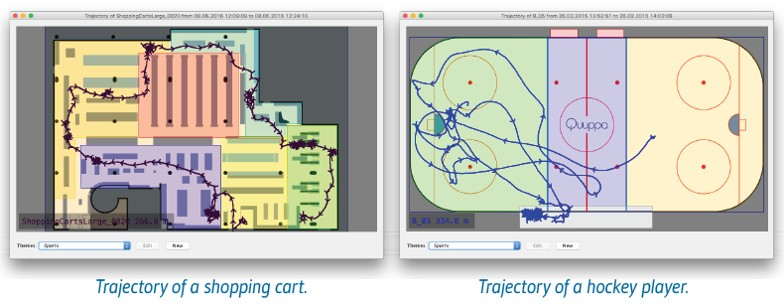
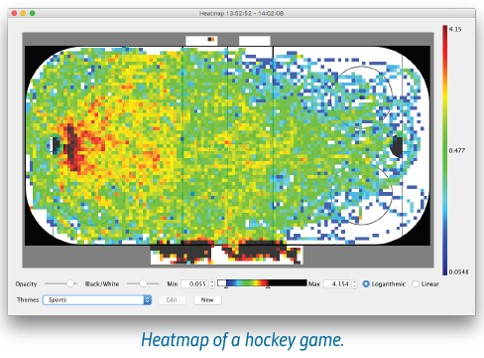
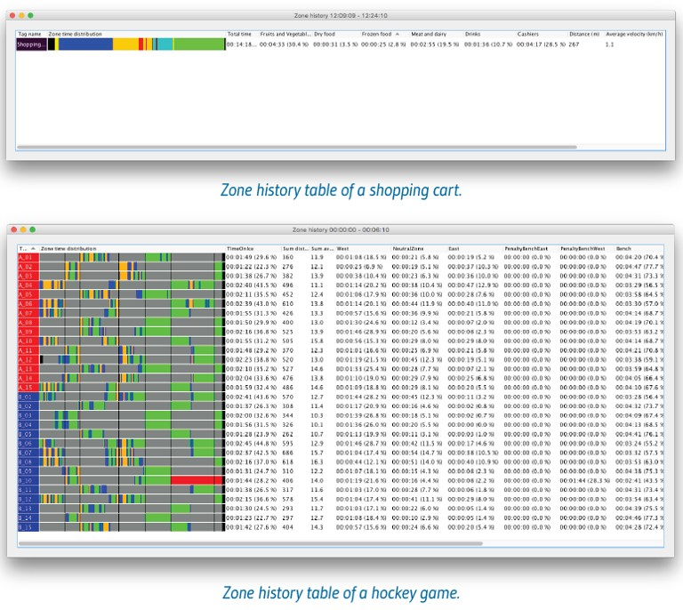
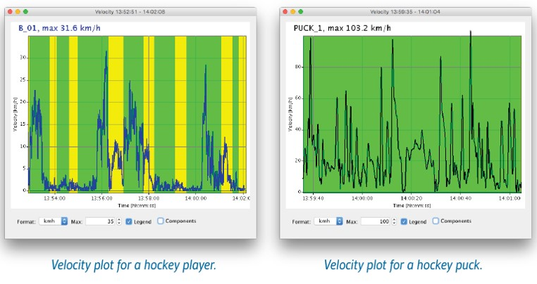
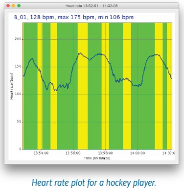

Visualisation and Analysis Tools
Data Player offers a set of tools for visualising and analysing the data.
Trajectory
Draws a trajectory of the selected Tags from the duration of the Interval. If Active Clock is enabled only active time is considered.
Heatmap
Draws a heatmap of the positions of the selected Tags during the Interval. If Active Clock is enabled only active time is considered. If no Tags are selected, heatmap will be generated from all Tags.Heatmap color scale can be set to use a linear or logarithmic scale and the endpoints can be adjusted according to the data.
Heatmap Opacity and Black/White mask can be adjusted to control how the heatmap is shown on top of the Map view. The Map view contents are controlled by using the Themes.

Zone History
Creates a Zone history table for the selected Tags from the duration of the Interval. If Active Clock is enabled only active time is considered. If no Tags are selected, history table will be generated to all Tags.Zone history table shows how long time a Tag has been in a certain area (Zone). The Zones are created in the Quuppa Project with the Quuppa Site Planner tool. It is possible to modify the Zones even afterwards and choose to use the modified project when loading the data (See Loading data in the Using the QDP Application section).
In addition to individual Zones, a sum is calculated for selected Zones, defined in Zone Table. Table row height can be adjusted in Settings.
Zone history table data can be exported in txt-format (csv) by right-clicking a table row and choosing “Export table”.

Velocity
Draws a velocity graph for the selected Tags during the selected interval.

Heart Rate
Draws a Heart rate graph for the selected Tags during the selected Interval.
Write Log
Requires Quuppa Push & Log module enabled.Write a logfile in CSV format (comma separated values) or export Quuppa Data Player file for the selected Tags from the duration of the Interval.
The Default log file format is:
$e$R,$i,$n,$c,$x2,$y2,$z2,$vx2,$vy2,$vz2,$q2,$G;$R
- Open the quuppaproject file with QSP
- From the menu bar, choose Project > UDP/logging/API editor...
- Create a new format with Format type: Processed location CSV format
- Save the project
- In Play Recorded Data mode: choose to use the modified project when loading data
- In Live View mode: submit the project to QCP and do a file sync for the Quuppa Positioning Engine
| Variable | Definition |
|---|---|
| $e | Timestamp (in milliseconds, either as Epoch timestamp or from zero) |
| $R | repeat block open (anything inside block will be repeated for each tag) |
| $i | Tag ID |
| $n | Tag name |
| $c | Coordinate system ID |
| $x2 | x coordinate with two decimals (m) |
| $y2 | y coordinate with two decimals (m) |
| $z2 | z coordinate with two decimals (m) |
| $vx2 | velocity x component with two decimals (m/s) |
| $vy2 | velocity y component with two decimals (m/s) |
| $vz2 | velocity z component with two decimals (m/s) |
| $q2 | quality estimate of the position data (radius in meters) |
| $G; | Zone names delimited with a semicolon |
| $R | repeat block close |
Dynamic Tools
Some of the visualising tools can also be used in real-time, either while the Data Player is replaying recorded data or streaming data in Live view mode. These tools can be found in the Window menu.Map
The Map can be opened in a separate window, for example for presenting on a second screen, or showing multiple coordinate systems.Tag Table
The Tag table can be opened in a separate window, in order to get a better view on all the Tag properties.XY / XZ / YZ View
Position of selected Tags can be viewed from different directions. This allows for example monitoring Tag height when tracking in 3D.- XY View = top view
- XZ View = side view from bottom
- YZ View = side view from right